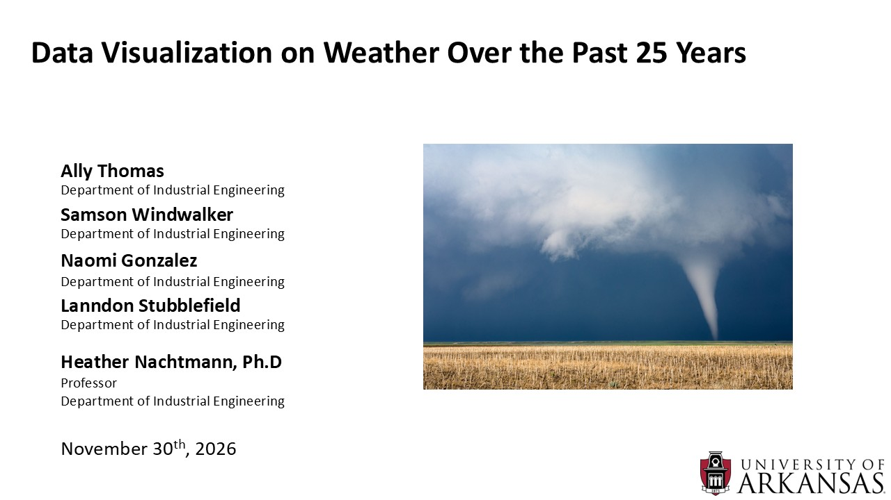
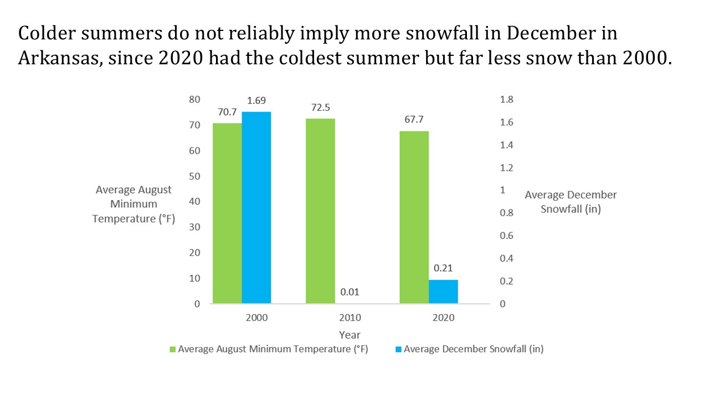
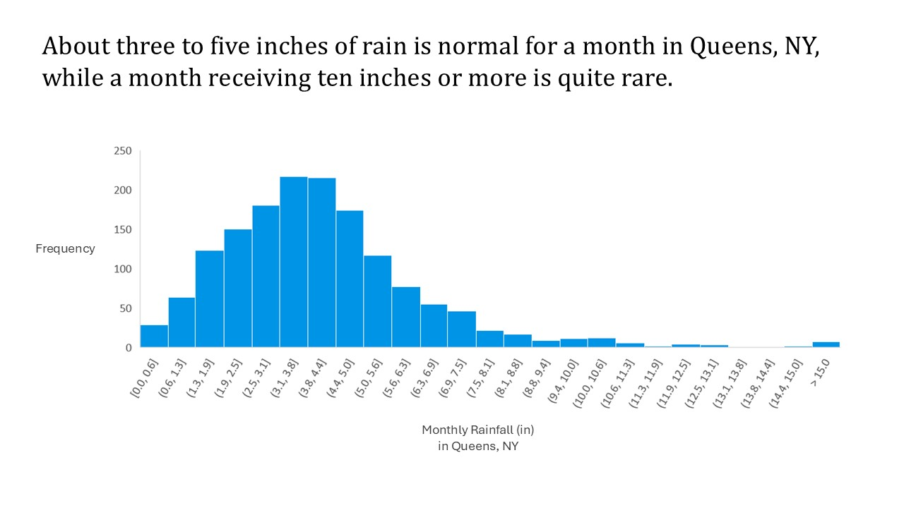
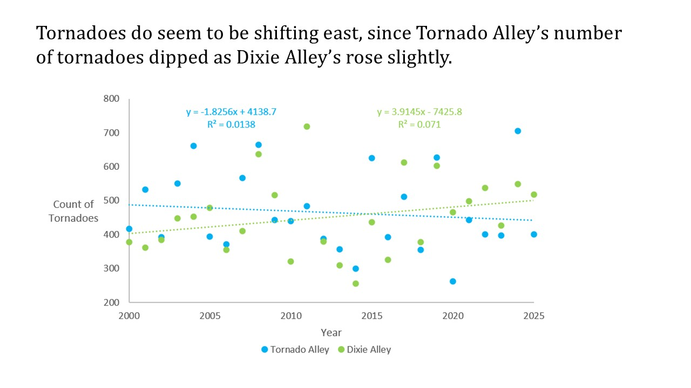
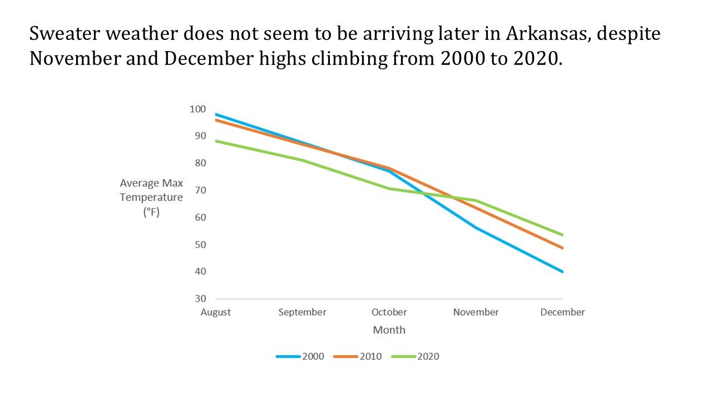

Authors: Ally Thomas, Samson Windwalker, Lanndon Stubblefield, Naomi Gonzalez
Weather affects everyday choices, from what we wear to how we prepare for severe storms, and weather data lets us test common weather assumptions. For this project, our team analyzed weather data and built one visualization for each of four questions. A bar chart compares average snowfall and minimum temperature in Arkansas to ask whether colder summers imply more snow. A histogram of monthly precipitation in Queens, NY shows what counts as a normal amount of rain. A scatter plot of yearly tornado events in Tornado Alley and Dixie Alley asks whether Tornado Alley is expanding east, shifting east, or not changing, and whether the two regions are related. Finally, a time series of Arkansas maximum temperatures from August to December in 2000, 2010, and 2020 shows whether “sweater weather” is arriving later.




